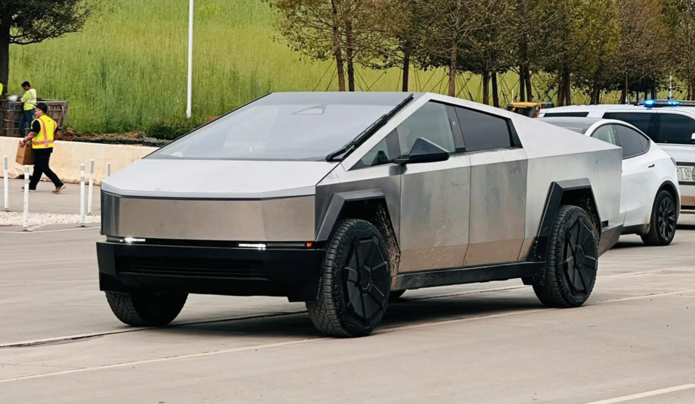

Drive Tesla 
 @DriveTeslaca . May 5
@DriveTeslaca . May 5
South Koream firm wins $300 million Tesla Cybertruck parts supply contract.

driveteslacanada.ca
South Koream firm wins $300 million Tesla Cybertruck parts supply contract.

Tesla places $227M+ order for Cybertruck parts.